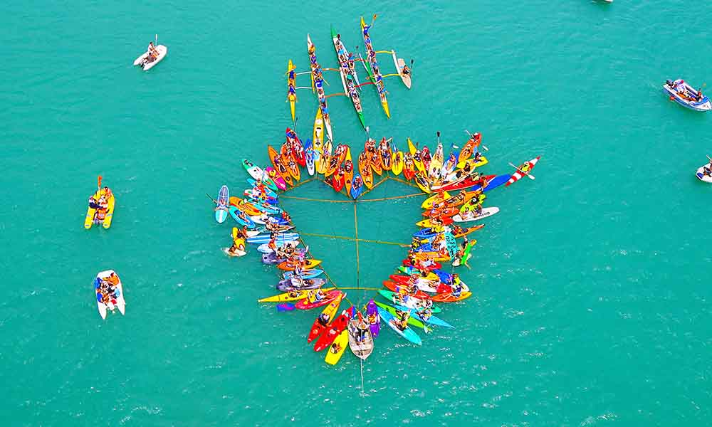

Community-led Conservation Efforts
Community-led conservation efforts for the Great Barrier Reef focus on protecting and restoring its delicate ecosystem through grassroots initiatives and collaborations. These efforts include coral restoration projects, sustainable fishing practices, pollution mitigation, and habitat preservation, such as safeguarding mangroves and seagrass beds. By engaging local communities, research organizations, and environmental groups, these initiatives work to address environmental challenges while promoting long-term resilience for the reef and its diverse marine life.
The Perry Institute for Marine Science is actively involved in coral reef conservation. Its efforts include the replanting of corals and its nurseries, ensuring fisheries continue to thrive to allow for support for species conservation and sustainable fishing research. They also support the protection of coastal mangrove forests and seagrass beds, allowing for a greater diversification of coastal ecosystems.
Donate Here For The Perry Institute for Marine Science (link)
The Nature Conservancy of Australia more actively focuses on addressing the pollution affecting the Great Barrier Reef and improving its resilience. They specifically identify rivers most responsible for delivering pollutants which cause intensive algae growth. This organisation also has close ties with the University of Queensland to address unsustainable land practices.
Donate Here For The Nature Conservancy of Australia (link)
To explore the history of conservation efforts for the Great Barrier Reef, please visit the History tab on our homepage. If you're interested in supporting the reef, there are many ways you can get involved. Browse through the sections on community-led conservation, political initiatives, donations, and petitions to learn how you can make a difference.